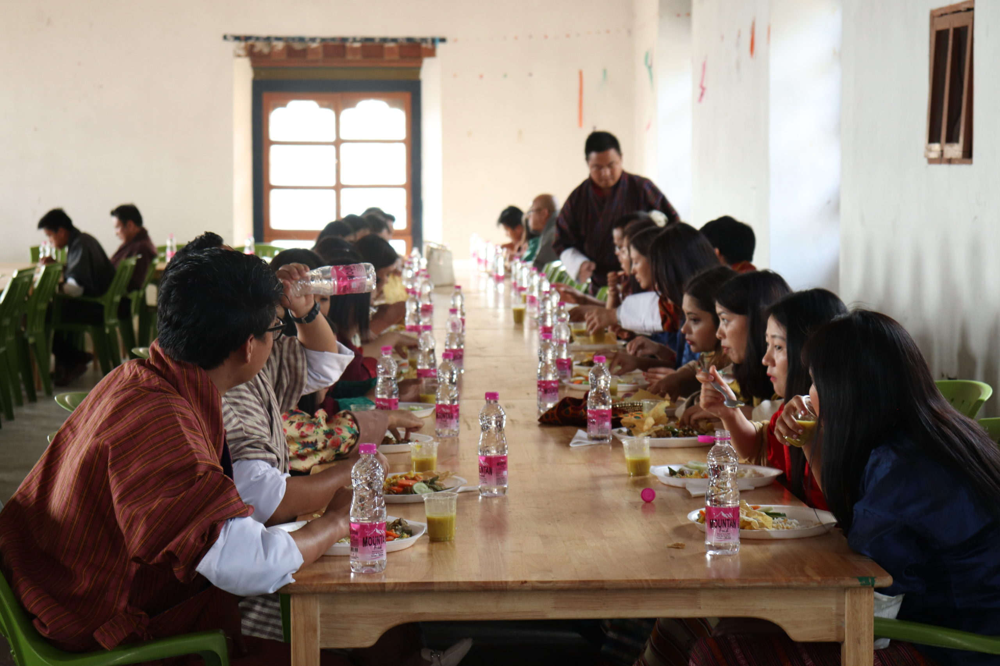

.jpg)

The college mess is dedicated to providing students with nutritious, hygienic, and delicious meals, offering a diverse menu that caters to various tastes and dietary preferences. Coordinated by the mess coordinator with support from the college, the mess operates efficiently with four to five cooks working in shifts to prepare meals around the clock. Additionally, counselors take turns managing mess operations, including weekly shopping and presenting detailed bills to ensure transparency and proper allocation of stipends for students.
Students have the flexibility to choose between dining at the college mess or preparing their own meals. Those who opt for self-catering are given a monthly stipend to assist with their food expenses. The college is equipped with two fully-equipped kitchens, offering high-quality cooking facilities. The management of the mess is largely handled by students, who are elected by the student body through a voting process.
The mess serves three meals a day to students. In addition, the campus also offers a canteen and a coffee cafe for students looking for additional food and beverage options throughout the day.